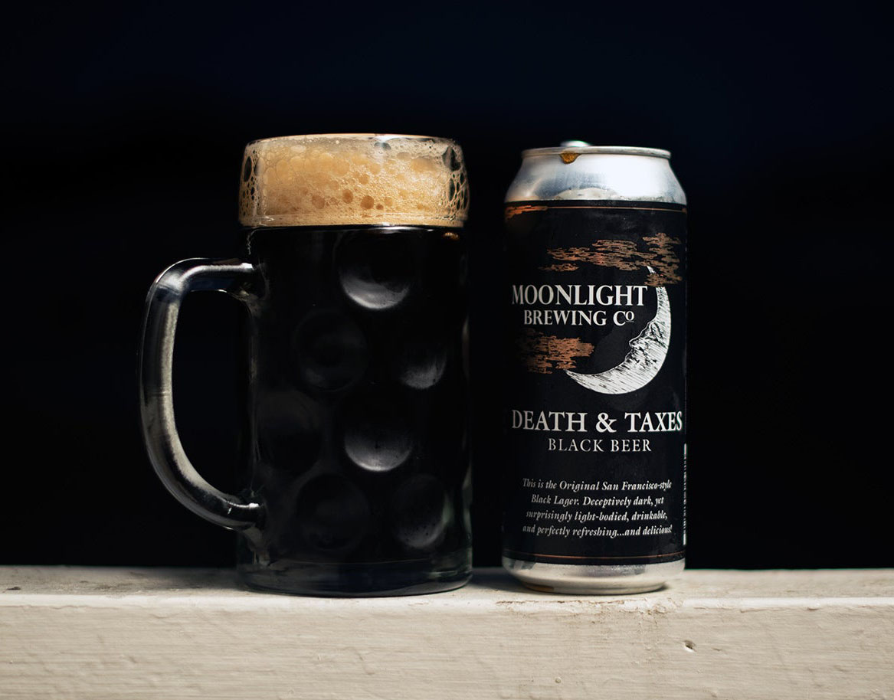

HOME
LAGER
Death and Taxes
Moonlight Brewing Co.
A deceptively light-bodied and highly drinkable San Francisco-Style Black Lager. Like iced coffee, but with a different effect.
Moonlight brewery and processes are on the traditional pre-industrial side. They use a single-step infusion mash and boil in a direct fire copper kettle. The resulting ales and lagers are mostly Continental, British, and post-modern American. The myriad of malts and hops that are played with come from Europe and North America in our never-ending pursuit of delicious beer. Located in Santa Rosa, CA.
Check out their site HERE 